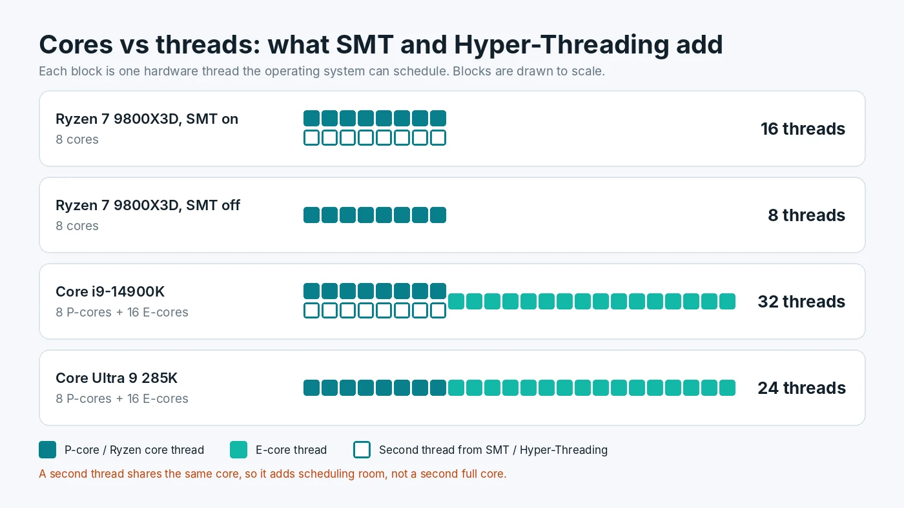

Hyper-Threading and SMT in Games: Should You Turn It Off?
Few BIOS settings get argued about as much as Hyper-Threading on Intel and SMT on AMD. Some players swear that turning it off makes games smoother, while others say it makes no difference at all. Both groups can be right, because the effect depends on the processor, the game and what else is running. This guide explains what the feature does, when switching it off can help or hurt, how to test it safely on your own PC, and why most gamers are best served by leaving it on.

What Hyper-Threading and SMT Actually Do
Simultaneous multithreading, or SMT, lets one physical CPU core run two instruction streams at once. Intel calls its version Hyper-Threading. AMD simply calls it SMT. To Windows, each of those streams looks like a separate processor, which is why Task Manager can show 16 logical processors on an 8-core chip.
The key point is that the two threads share the same core. They share its execution units, its caches and its connection to memory. SMT works because a single thread rarely keeps every part of a core busy. While one thread waits for data from memory, the other can use the idle units. The result is more total work done per core, but nowhere near double. A second thread is extra scheduling room, not a second full core.
That sharing is also why SMT can occasionally hurt. When two busy threads land on the same core, each one runs a little slower than it would alone. If one of them is the main game thread, that small slowdown can show up as a lower frame rate or weaker 1% lows.
Which CPUs Still Have It
Thread counts are less uniform than they used to be, so it helps to know what your processor has before you change anything:
- AMD Ryzen. Desktop Ryzen processors in current lines generally support SMT, giving two threads per core. A Ryzen 7 9800X3D, for example, has 8 cores and 16 threads.
- Intel 12th to 14th Gen Core. These hybrid chips mix performance cores (P-cores) and efficient cores (E-cores). Only the P-cores have Hyper-Threading. A Core i9-14900K has 8 P-cores and 16 E-cores, for 32 threads.
- Intel Core Ultra 200S desktop chips. Intel dropped Hyper-Threading from this generation, codenamed Arrow Lake. A Core Ultra 9 285K has the same 8 P-cores and 16 E-cores layout as the 14900K but only 24 threads, one per core.
The chart above shows these four layouts side by side. If you own one of the Core Ultra 200S desktop chips, there is no Hyper-Threading setting to change, and the rest of this debate does not apply to you.
How to Check Your Cores and Threads
You do not need to open the BIOS to see whether SMT is active:
- Open Task Manager with Ctrl + Shift + Esc.
- Go to the Performance tab and select CPU.
- Look at the lines labeled Cores and Logical processors below the graph.
If logical processors is double the core count, SMT or Hyper-Threading is on for every core. On an Intel hybrid chip, the logical count will be the number of P-cores times two, plus the E-cores. If both numbers match, SMT is either off or not supported. A free tool such as CPU-Z shows the same information on its CPU tab, along with the exact model name. Our walkthrough on watching per-core load in Task Manager explains how to switch the CPU graph to show every logical processor.
When Turning It Off Can Help
There are real cases where disabling SMT gives a small gain, but they are narrower than forum posts suggest:
- CPUs with many cores in lightly threaded games. A 12- or 16-core chip already has more cores than most games can use. Without SMT, every game thread gets a full core to itself, and in some titles that can nudge average FPS or 1% lows up slightly.
- Older or poorly optimized games. Some older engines scale badly when they see a very high thread count and spread work in odd ways. Results vary by title, and a game patch can change the outcome.
- Heat and power. Fewer active threads usually means slightly lower power draw and temperature under full load. On a CPU that runs close to its thermal limit, that can help clocks stay higher. If heat is your real issue, start with the checks in our guide to telling heat limits apart from a slow CPU instead.
In most modern games on a well-cooled PC, the difference either way tends to be small, often within normal run-to-run variation. Windows also generally tries to place work on separate physical cores before doubling up threads on one core, which already avoids much of the sharing penalty.
When Turning It Off Hurts
The cases where switching SMT off costs performance are more common for the average gaming PC:
- CPUs with 6 cores or fewer. On a 4-core or 6-core processor, a modern game, its anti-cheat, Discord, a browser and Windows background tasks can easily need more than one thread per core. Without SMT, those jobs compete for the same few cores, and stutter often gets worse. Many players with these chips are already close to CPU usage pinned at 100% in games, and removing threads makes that worse.
- Streaming and recording. Encoding video on the CPU, running OBS scenes and a chat overlay all add threads. If you stream with software encoding, SMT usually helps. See our notes on fixing encoding lag while you stream for the other settings that matter there.
- Productivity work. Rendering, compiling code and video exports scale with thread count. If the same PC does both, disabling SMT trades a possible small gaming gain for a clear loss in these tasks.
- Shader compile screens. Precompile steps and loading screens often use every available thread, so they can take longer with SMT off.
How to Test SMT on Your Own PC
Because results depend so much on the exact game and CPU, the only reliable answer is a short test of your own:
- Pick two or three games you play often, ideally ones where you suspect a CPU limit. Lower the resolution or use upscaling so the GPU is not the main limit.
- Choose a repeatable scene, such as a built-in benchmark or the same route through a busy area for 60 seconds.
- Record average FPS and 1% lows with an overlay or capture tool. Run each test three times and use the middle result.
- Reboot into the BIOS and switch the setting. On AMD boards it is usually called SMT Control or SMT Mode, often under an advanced CPU configuration menu. On Intel boards look for Hyper-Threading, sometimes under CPU or processor configuration. Menu names vary by motherboard maker, so check the manual if you cannot find it.
- Repeat the same runs with the same background apps open, then compare.
If the gap is smaller than the difference between your own repeated runs, treat it as no change and turn SMT back on. Pay more attention to 1% lows than to average FPS, since smoothness is what you feel. Our guide on reading frame-time spikes and 1% lows covers how to judge those numbers.
Better Things to Try First
Disabling SMT is a niche tweak with a small upside. If your games feel CPU-limited, these steps usually matter more:
- Close background apps that use CPU time, especially browsers with many tabs and launcher overlays.
- Make sure your RAM runs at its rated speed with XMP or EXPO enabled.
- Keep the chipset driver, BIOS and Windows up to date, since CPU scheduling fixes often arrive through these.
- Use a frame rate cap a little below your monitor refresh rate to steady frame pacing.
- Check that the CPU stays below its thermal limit during long sessions.
If none of that helps, the processor may simply be the limiting part. Our guide to spotting whether the CPU or GPU limits your frame rate shows how to confirm that before you spend money.
Conclusion
Hyper-Threading and SMT let each core juggle two threads, which adds useful capacity for multitasking, streaming and heavy workloads. Turning them off can give a small gain on high-core-count CPUs in some games, but it can also hurt on 4-core and 6-core chips and whenever you run other apps alongside the game. For most players the right choice is to leave the setting on and only switch it off after a careful test shows a repeatable improvement. To see whether your CPU and GPU are well matched in the first place, try the free PC Bottleneck Calculator.
Frequently Asked Questions
Does disabling Hyper-Threading increase FPS?
Sometimes, but usually only slightly. Gains tend to appear on CPUs with many cores in games that use only a few threads. On 4-core and 6-core processors, turning it off can lower FPS or make stutter worse, so test your own games before deciding.
Is SMT the same as Hyper-Threading?
Yes, in practice. Simultaneous multithreading is the general name for running two threads on one core. Hyper-Threading is Intel's brand name for it, and AMD calls its version SMT.
Why does my new Intel CPU have no Hyper-Threading option?
Intel removed Hyper-Threading from its Core Ultra 200S desktop processors. They run one thread per core, so there is no setting to change in the BIOS.
Should I turn off SMT on a Ryzen X3D processor?
Most users should leave it on. The 8-core X3D chips are already strong in games, and SMT gives extra room for background apps. Only switch it off if a careful test in your own games shows a repeatable gain.
Is it safe to turn Hyper-Threading or SMT off?
Yes. It is a normal BIOS option and does not damage the CPU. You can switch it back on at any time, and resetting the BIOS to defaults also turns it back on.
Sources
Official specifications and tools referenced in this guide: